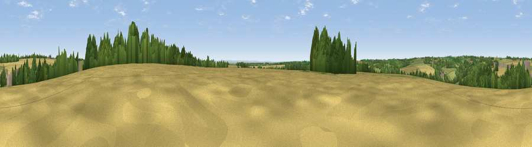

Viewpoint near Elkstone
#23394 in England · top 47% of its area beats it · near ElkstoneThe view, rendered

A 360° render of this exact spot computed from the terrain model, tree cover and land cover — summer colours, afternoon light, calibrated against photographs of famous viewpoints. Real trees, hedges and buildings will differ in detail.
The panorama
Grey silhouette: terrain skyline in each direction (720 bearings, Earth curvature and refraction included). Dashed green: skyline with trees (+15 m) and buildings (+8 m) as obstacles. Blue strip: how far the ground is visible on each bearing.
Where the view opens
Wedge length = distance to the farthest visible ground on that bearing (vegetation-aware). Rings at 10, 25 and 50 km.
What fills the view
49% cropland · 30% grassland · 18% woodland · 3% built-up
Angular shares of the visible panorama (visual magnitude), not map area. Landscape diversity 0.49 (0–1 Shannon).
Key numbers
More beautiful places nearby
The staircase of upgrades: each row has a higher view potential than everything closer. Driving times are estimates from straight-line distance, calibrated against real road routing — check an actual route before setting out.
| Place | Direction | Drive | Score |
|---|---|---|---|
| Pen Hill | E · 4 km | ~9 min | 66.4 |
| Birdlip Hill | NW · 4 km | ~9 min | 71.7 |
| Viewpoint near Witcombe | NW · 5 km | ~11 min | 72.2 |
| Viewpoint near Shurdington | NNW · 7 km | ~14 min | 73.1 |
| Viewpoint near Leckhampton | N · 7 km | ~14 min | 77.8 |
| Viewpoint near Great Witcombe | WNW · 7 km | ~14 min | 80.5 |
| Nottingham Hill | N · 17 km | ~29 min | 80.9 |
| Viewpoint near Bredon's Norton | N · 28 km | ~44 min | 81.3 |
51.80550, -2.06413 · source: screening · position refined by local search. Computed location — check access rights before visiting.